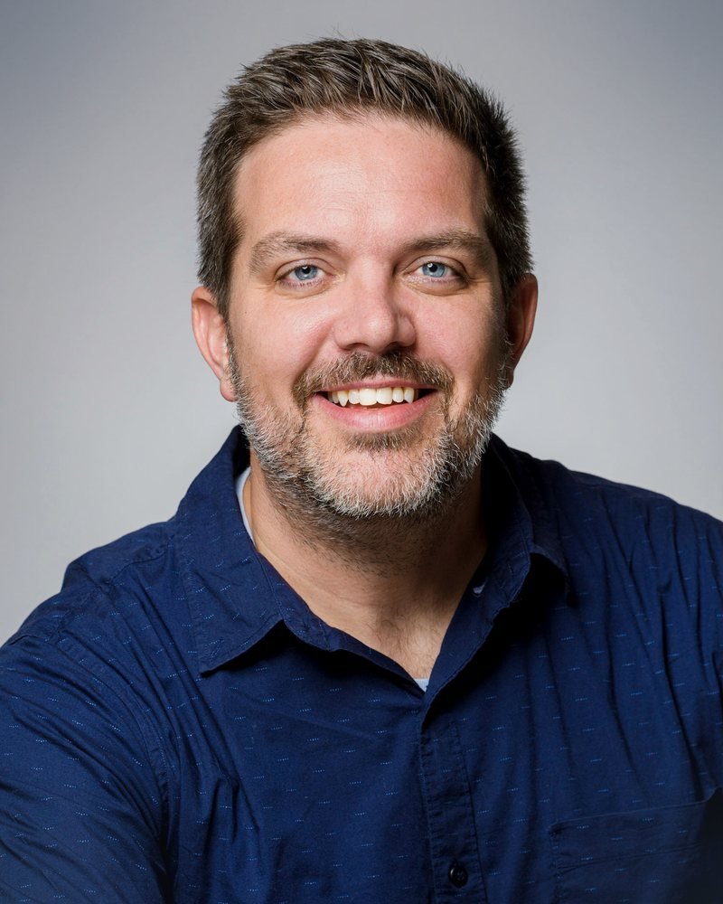
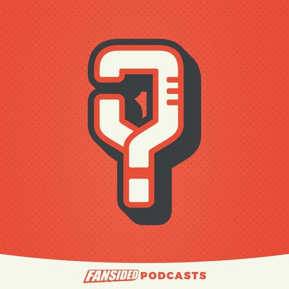

Built it from zero
I started a company with no money and no playbook. I know what founders are weighing because I've weighed it myself.
Founder · Operator · Executive
Co-founded FanSided with his brother. Runs communities at Sports Illustrated and FanSided.

The strongest businesses are built around people first.
Zach has spent his career building connections between people, communities, audiences, and ideas.
His experience spans education, entrepreneurship, media, and development, but the common thread has always been relationships. Whether building a company from the ground up, growing communities around some of the biggest brands in media, or developing new opportunities closer to home, he believes the strongest businesses are built around people first.
Board service
The strongest boards pair rigorous governance with operating experience. Zach brings the founder, operator and executive vantage points to the table, and invests selectively in media and community businesses.
I started a company with no money and no playbook. I know what founders are weighing because I've weighed it myself.
I've led a company through acquisition and integration, and kept the team and the culture together on the other side.
I run communities at Sports Illustrated and FanSided, where editorial, product and sales have to pull in the same direction.
Our work with Special Olympics taught me that inclusive teams make better decisions. I bring that to every room I'm in.
Track record
Still leads FanSided, the network he co-founded, alongside the SI ONSI network.
Led the FanSided business within Minute.
FanSided came to Meredith with its acquisition of Time Inc.
Stayed on to lead FanSided through integration into a national media organization.
With his brother Adam. One sports site became a network of hundreds of localized fan brands.
Where the habits of clear communication and developing people were formed.
Podcast & press

Conversations built with Special Olympics athletes and Unified partners. Inclusive storytelling as professional practice, not charity.
For board seats, advisory roles, or an investment conversation.